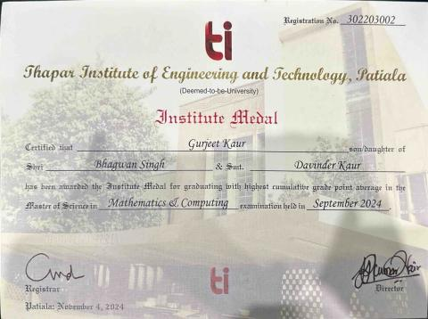
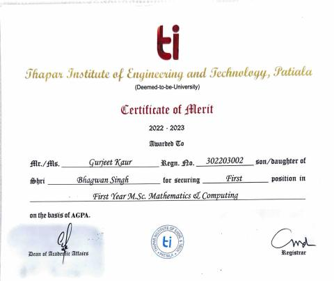

Master’s Student in Computer Science at NYU | Gold Medalist in Mathematics & Computing | Machine Learning • Optimization • AI Systems
I am currently pursuing a Master’s in Computer Science at New York University, building upon my academic foundation as a Gold Medalist in Mathematics and Computing. My work sits at the intersection of machine learning, optimization, and scalable AI systems.
I have designed predictive models using ensemble learning techniques, developed optimization algorithms for complex mathematical programming problems, and built financial analytics dashboards that translate raw data into actionable insights.
My technical expertise includes Python, C++, SQL, and MATLAB, with hands-on experience in PyTorch, TensorFlow, and Scikit-learn. I am particularly interested in large language models, prompt engineering, and building robust AI systems that perform reliably in real-world settings.
Python, C++, SQL, MATLAB
Transformers, CNNs, RNNs, Ensemble Methods, Model Evaluation
PyTorch, TensorFlow, Scikit-learn
PySpark, Hadoop, Pandas, NumPy, PostgreSQL
Trained Transformer and LSTM architectures (3M → 100M+ parameters) on a 143M-token corpus derived from 178K MIDI files. Demonstrated power-law scaling behavior with improved perplexity and syntactic validity using PyTorch.
View on GitHubApplied PySpark FP-Growth on 1.1M+ retail transactions to identify frequent itemsets and high-confidence association rules for scalable recommendation insights.
View on GitHubDeveloped a generalized MATLAB framework for solving linear and quadratic bilevel integer programming problems with applications in transportation, energy systems, and supply chain optimization.
View DissertationBuilt an ensemble model combining Random Forest and CNN architectures optimized using Genetic Algorithms and Cuckoo Search. Addressed class imbalance using SMOTE and achieved 95% accuracy.
Built financial analytics dashboards using Python, Streamlit, and Pandas. Automated multi-sheet Excel workflows and improved reporting efficiency by ~30%. Designed robust preprocessing pipelines for clean and reliable insights.
M.Sc. Mathematics & Computing
Thapar Institute of Engineering and Technology
Email: gk2845@nyu.edu
GitHub: github.com/gurjeetkaur0005
LinkedIn: linkedin.com/in/gurjeetkaur0005